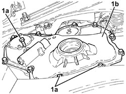
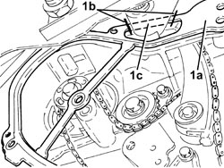
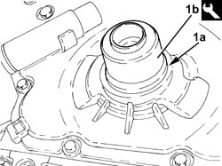
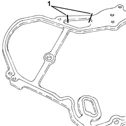
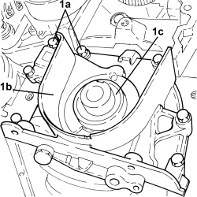
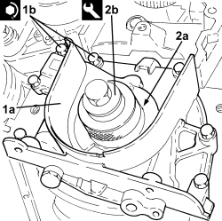

1020D14 FRONT CRANKSHAFT OIL SEAL COVER - R.R AND REPLACE SEALS FOR VERSIONS WITH OIL PUMP ON CRANKSHAFT, TIMING SIDE
- Path
- Procedures > 10 ENGINE > 1020 CRANKCASE SUMP AND COVERS > 1020D OIL SEALS ON CRANKSHAFT > 1020D14 FRONT CRANKSHAFT OIL SEAL COVER - R.R AND REPLACE SEALS FOR VERSIONS WITH OIL PUMP ON CRANKSHAFT, TIMING SIDE
- Kind
- repair procedure (removal / refitting; the operation number is the code)
- Applies to
- engines: 1.9 JTS, 2.2 JTS, 3.2 JTS, 1.9 JTD 8V, 1.9 JTD 16V, 2.4 JTD 20V; all production periods
- Interactive page
- https://sloeber94.github.io/elrnDB/alfa/159/en/#/939010433
Applies to: engines: 1.9 JTS, 2.2 JTS; all production periods
 Removing
Removing
 Refitting
Refitting- Position the vehicle on a lift.
Op. 4450B04 RIGHT FRONT WHEEL - R.R
Op. 7055B66 ENGINE COMPARTMENT DUST COVER IN RIGHT FRONT WHEEL ARCH - R.R.
Op. 1092G10 SINGLE ENGINE BELT - R.R
Op. 1092A10 CRANKSHAFT PULLEY - R + R
Op. 1092G14 ENGINE COMPONENT SINGLE BELT MOVING TENSIONER - R + R
1. Undo the bolts (1a) and remove the crankshaft front oil seal cover (1b).

Applies to: engines: 1.9 JTS, 2.2 JTS; all production periods
1. Remove the crankshaft front oil seal cover (1a) destructively by cutting through points (1b) shown in the figure.

Applies to: engines: 1.9 JTS, 2.2 JTS; all production periods
- Working at the bench, remove the oil seal from the timing chain cover.
Applies to: engines: 1.9 JTS, 2.2 JTS; all production periods
Refitting
Removing1. Fit a new oil seal (1a) on the timing chain cover using the tool (1b).
Tool | Description | Function | Validity |
|---|---|---|---|
1860099000 | Fitting tool | Fitting timing chain cover oil seal | 1.9 JTS 2.2 JTS |

Applies to: engines: 1.9 JTS, 2.2 JTS; all production periods
1. If the crankshaft oil seal front cover gasket has been removed, cut the section that remains attached to the rigid engine mount to allow installation.

Applies to: engines: 1.9 JTS, 2.2 JTS; all production periods
- Refit the crankshaft front oil seal cover gasket and arrange as shown above.
1. Place the crankshaft front oil seal cover (1a) in its housing and secure it tightening the bolts (1b) to the recommended torque.
Component | Fastening | dia | Value (daNm) | Validity |
|---|---|---|---|---|
Crankshaft oil seal front cover | Bolt | M8 | (engine block side) 2.1 | 1.9 JTS 2.2 JTS |

Applies to: engines: 1.9 JTS, 2.2 JTS; all production periods
Op. 1092G14 ENGINE COMPONENT SINGLE BELT MOVING TENSIONER - R + R
Op. 1092A10 CRANKSHAFT PULLEY - R + R
Op. 1092G10 SINGLE ENGINE BELT - R.R
Op. 7055B66 ENGINE COMPARTMENT DUST COVER IN RIGHT FRONT WHEEL ARCH - R.R.
Op. 4450B04 RIGHT FRONT WHEEL - R.R
- Remove the vehicle from the lift.
Applies to: engines: 1.9 JTD 8V, 1.9 JTD 16V; all production periods
Removing
Refitting- Position the vehicle on a lift.
Op. 1016A10 SOUND-PROOFING COVER - R.R
Op. 1048A50 TURBOCHARGER AIR INTAKE PIPE - R.R.
Op. 1084A16 OIL DIPSTICK PIPE - R.R
Op. 1048A28 VACUUM AIR CIRCUIT RESONATOR PIPE - R+R
Op. 4450B04 RIGHT FRONT WHEEL - R.R
Op. 7055B66 ENGINE COMPARTMENT DUST COVER IN RIGHT FRONT WHEEL ARCH - R.R.
Op. 7055B91 RIGHT FRONT WHEEL ARCH LINER - R.R.
Op. 4410D16 BRACKET (ONE) RETAINING CHASSIS TO BODY - R R
Op. 1092G10 SINGLE ENGINE BELT - R.R
Op. 1092A10 CRANKSHAFT PULLEY - R + R
Op. 1032B10 TOOTHED TIMING BELT - R + R FOR TIMING ADJUSTMENT OR REPLACEMENT
Op. 1032B44 TOOTHED DRIVE PULLEY - R + R WITH TIMING BELT REMOVED
Op. 7055B54 UNDER ENGINE PROTECTION/GUARD - R.R.
Op. 2710A14 RIGHT HAND DRIVE SHAFT WITH JOINTS - R+R
Op. 1076B72 INTERMEDIATE EXHAUST PIPE WITH HOSE SECTION - R+R
Op. 1048B14 AIR DELIVERY HOSE BETWEEN TURBOCHARGER AND HEAT EXCHANGER - REPLACE
Op. 1020A20 CRANKCASE OIL SUMP - R.R CLEAN SURFACES FOR SEALANT APPLICATION
Op. 1084B28 ENGINE OIL INTAKE PUMP - R + R WITH CRANKCASE SUMP REMOVED
1. Undo the bolts (1a) and remove the crankshaft oil seal front cover (1b) complete with oil seal (1c).
- Recover the gasket.

Applies to: engines: 1.9 JTD 8V, 1.9 JTD 16V; all production periods
- Working at the bench, release and remove the crankshaft front oil seal cover.
Applies to: engines: 1.9 JTD 8V, 1.9 JTD 16V; all production periods
Refitting
Removing- Place the gasket back in its housing.
1. Place the crankshaft front oil seal cover (1a) in its housing and secure it tightening the new bolts (1b) to the recommended torque.
Component | Fastening | dia | Value (daNm) | Validity |
|---|---|---|---|---|
Crankshaft oil seal front cover | Bolt (pretreated to be replaced) | M6 | (engine block side) 0.8 - 1.0 | 1.9 JTD 16V 2.4 JTD 20V |
2. Fit a new crankshaft front cover oil seal (2a) in the housing using the tool (2b).
Tool | Description | Function | Validity |
|---|---|---|---|
1871000500 | Fitting tool | Fitting crankshaft front oil seal | 1.9 JTD 8V 1.9 JTD 16V 2.4 JTD 20V |

Applies to: engines: 1.9 JTD 8V, 1.9 JTD 16V; all production periods
Op. 1084B28 ENGINE OIL INTAKE PUMP - R + R WITH CRANKCASE SUMP REMOVED
Op. 1020A20 CRANKCASE OIL SUMP - R.R CLEAN SURFACES FOR SEALANT APPLICATION
Op. 1048B14 AIR DELIVERY HOSE BETWEEN TURBOCHARGER AND HEAT EXCHANGER - REPLACE
Op. 1076B72 INTERMEDIATE EXHAUST PIPE WITH HOSE SECTION - R+R
Op. 2710A14 RIGHT HAND DRIVE SHAFT WITH JOINTS - R+R
Op. 1032B44 TOOTHED DRIVE PULLEY - R + R WITH TIMING BELT REMOVED
Op. 1032B10 TOOTHED TIMING BELT - R + R FOR TIMING ADJUSTMENT OR REPLACEMENT
Op. 1092A10 CRANKSHAFT PULLEY - R + R
Op. 1092G10 SINGLE ENGINE BELT - R.R
Op. 4410D16 BRACKET (ONE) RETAINING CHASSIS TO BODY - R R
Op. 7055B91 RIGHT FRONT WHEEL ARCH LINER - R.R.
Op. 7055B66 ENGINE COMPARTMENT DUST COVER IN RIGHT FRONT WHEEL ARCH - R.R.
Op. 4450B04 RIGHT FRONT WHEEL - R.R
Op. 1048A28 VACUUM AIR CIRCUIT RESONATOR PIPE - R+R
Op. 1084A16 OIL DIPSTICK PIPE - R.R
Op. 1048A50 TURBOCHARGER AIR INTAKE PIPE - R.R.
Op. 0010T71 POWER STEERING FLUID CHECK LEVEL AND TOP UP IF NECESSARY
Op. 7055B54 UNDER ENGINE PROTECTION/GUARD - R.R.
Op. 1016A10 SOUND-PROOFING COVER - R.R
- Remove the vehicle from the lift.
Applies to: engines: 2.4 JTD 20V; all production periods
- On this car, it is not possible to remove/refit the crankshaft front oil seal cover on the car.
To perform this operation, remove/refit the power unit
Op. 1004B10 POWER UNIT WITH MANUAL GEARBOX - R.R
and then work at the bench, customising the engine service procedures for this operation.
Applies to: engines: 3.2 JTS; all production periods
Topics linked from this page (25)
- 0010T71 POWER STEERING FLUID CHECK LEVEL AND TOP UP IF NECESSARY
- 1004B10 POWER UNIT WITH MANUAL GEARBOX - R.R
- 1004D10 POWER UNIT (MANUAL GEARBOX), REMOVED, DISMANTLE AND REASSEMBLE
- 1004D40 ENGINE - POSITION ON STAND AND REMOVE
- 1004E10 ENGINE, REMOVED - REMOVE CYLINDER HEAD AND OIL SUMP FOR INSPECTION - INCLUDES POSITIONING ON STAND AND REMOVAL
- 1004E20 ENGINE - DISMANTLE AND REASSEMBLE FOLLOWING OPERATION 1004E10 - WASH AND CHECK DISMANTLED PARTS - REFIT CYLINDER HEAD AND OIL SUMP - DOES NOT INCLUDE REPAIRS TO CYLINDER HEAD AND AUXILIARY UNIT
- 1016A10 SOUND-PROOFING COVER - R.R
- 1020A20 CRANKCASE OIL SUMP - R.R CLEAN SURFACES FOR SEALANT APPLICATION
- 1032B10 TOOTHED TIMING BELT - R + R FOR TIMING ADJUSTMENT OR REPLACEMENT
- 1032B44 TOOTHED DRIVE PULLEY - R + R WITH TIMING BELT REMOVED
- 1048A28 VACUUM AIR CIRCUIT RESONATOR PIPE - R+R
- 1048A50 TURBOCHARGER AIR INTAKE PIPE - R.R.
- 1048B14 AIR DELIVERY HOSE BETWEEN TURBOCHARGER AND HEAT EXCHANGER - REPLACE
- 1076B72 INTERMEDIATE EXHAUST PIPE WITH HOSE SECTION - R+R
- 1084A16 OIL DIPSTICK PIPE - R.R
- 1084B28 ENGINE OIL INTAKE PUMP - R + R WITH CRANKCASE SUMP REMOVED
- 1092A10 CRANKSHAFT PULLEY - R + R
- 1092G10 SINGLE ENGINE BELT - R.R
- 1092G14 ENGINE COMPONENT SINGLE BELT MOVING TENSIONER - R + R
- 2710A14 RIGHT HAND DRIVE SHAFT WITH JOINTS - R+R
- 4410D16 BRACKET (ONE) RETAINING CHASSIS TO BODY - R R
- 4450B04 RIGHT FRONT WHEEL - R.R
- 7055B54 UNDER ENGINE PROTECTION/GUARD - R.R.
- 7055B66 ENGINE COMPARTMENT DUST COVER IN RIGHT FRONT WHEEL ARCH - R.R.
- 7055B91 RIGHT FRONT WHEEL ARCH LINER - R.R.